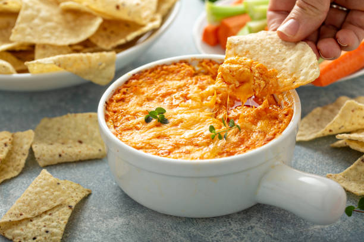
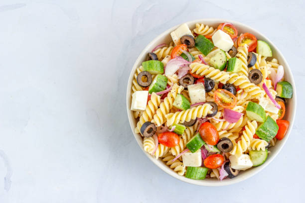
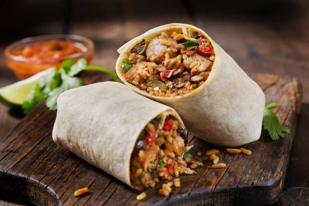

Welcome to my food-themed website! I have been meal prepping for about 3 years and have been losing weight and keeping it off. Pairing these foods with light to moderate excerxise each week
should help you keep the weight off. These are easy to make meals where all you really need is a crockpot and your hands. After portioning out what you make, you should have meals for at least a week
to eat. Making a few of these at a time and you'll be eating good for weeks!



